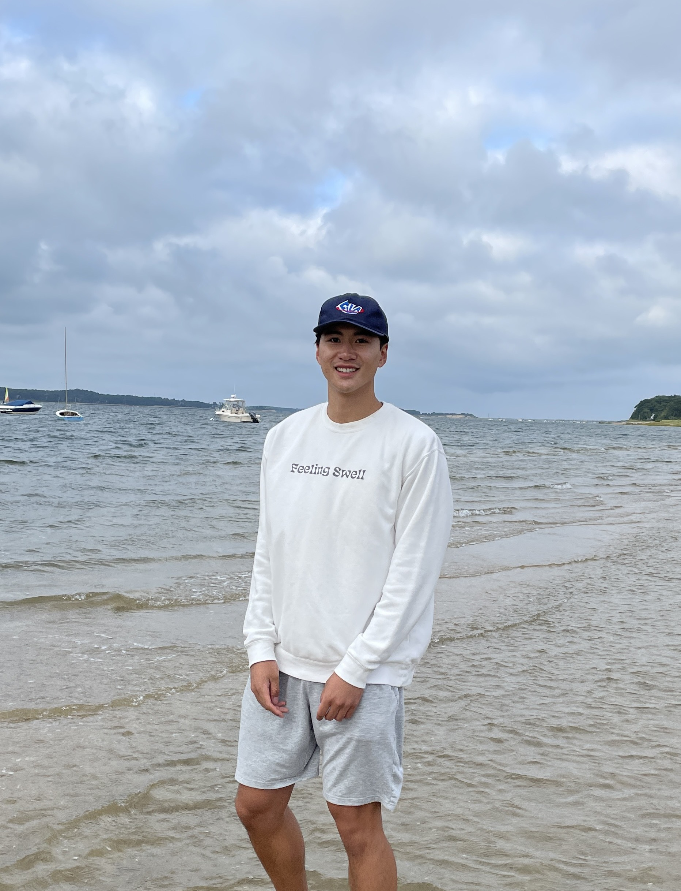

Hey Everyone, I'm Tim!
I'm a college student set to graduate in Spring of 2025 with a degree in CS and Business Analytics/Information Technology. Here's a little bit about a kid from Monroe, New Jersey!


I'm a rising junior of Rutgers University's Business School set to graduate in May of 2025 with a double major in Computer Science and Business Analytics/Information Technology (BAIT).
My interest lie heavily with anything technology related and I'm currently looking for internship roles that include but are not limited to software engineering, data science, consulting, and cybersecurity!
I've always had an interest in the way things work and building products/services for my own and others' uses. Feel free to reach out!
Some hobbies and interests!
- > I enjoy playing basketball and participate in Men's and intramural leagues
- > I played lacrosse in high school and am a big fan of watching college lacrosse
- > Rick Riordian is the reason that I'm interested in Greek and Roman mythology, and have taken related classes at Rutgers
- > Fitness is a huge part of my lifestyle, and that include weightlifting, snowboarding, etc.
- > I'm finished with over 100 episodes of One Piece and almost done! (i'll get there eventually)